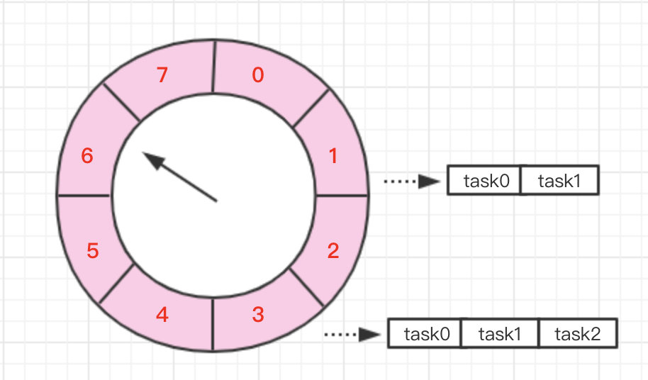

public static void main(String[] args) {
DateTimeFormatter formatter = DateTimeFormatter.ofPattern("yyyy-MM-dd HH:mm:ss");
LocalDateTime localDateTime = LocalDateTime.now();
String format = localDateTime.format(formatter);
System.out.println("1:"+format);
Timer timer = new Timer();
for (int i = 0; i < 2; i++) {
timer.schedule(new TimerTask() {
@Override
public void run() {
try {
Thread.sleep(3000);
} catch (InterruptedException e) {
e.printStackTrace();
}
System.out.println("Thread name : "+ Thread.currentThread().getName());
LocalDateTime localDateTime = LocalDateTime.now();
String format = localDateTime.format(formatter);
System.out.println("2:"+format);
}
}, 3000);
}
localDateTime = LocalDateTime.now();
format = localDateTime.format(formatter);
System.out.println("3:"+format);
}结果
1:2019-10-14 17:35:13
3:2019-10-14 17:35:13
Thread name : Timer-0
2:2019-10-14 17:35:19
Thread name : Timer-0
2:2019-10-14 17:35:22ScheduledExecutorService做了改进，采用了线程池的定时任务队列，实际使用的也是最小堆排序private static DateTimeFormatter formatter = DateTimeFormatter.ofPattern("yyyy-MM-dd HH:mm:ss");
public static void main(String[] args) {
// timerTest();
print("1:");
ScheduledExecutorService service = new ScheduledThreadPoolExecutor(2);
for (int i = 0; i < 2; i++) {
service.schedule(new Runnable() {
@Override
public void run() {
try {
Thread.sleep(3000);
} catch (InterruptedException e) {
e.printStackTrace();
}
System.out.println("Thread name : " + Thread.currentThread().getName());
print("2:");
}
}, 3, TimeUnit.SECONDS);
}
print("3:");
service.shutdown();
}
private static void print(String s) {
LocalDateTime localDateTime = LocalDateTime.now();
String format = localDateTime.format(formatter);
System.out.println(s + format);
}结果
1:2019-10-15 11:53:54
3:2019-10-15 11:53:54
Thread name : pool-1-thread-1
2:2019-10-15 11:54:00
Thread name : pool-1-thread-2
2:2019-10-15 11:54:00
明白它的延迟原理和Timer一样，可以知道如果我把核心线程数改成1，则效果和Timer类似
1:2019-10-15 11:57:40
3:2019-10-15 11:57:40
Thread name : pool-1-thread-1
2:2019-10-15 11:57:46
Thread name : pool-1-thread-1
2:2019-10-15 11:57:49
参考博客：
延迟消息之时间轮